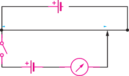
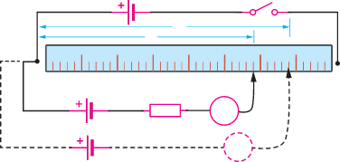

Figure 2.33: A potentiometerOn closing the switch, S, there will be a potential drop across AB and hence between point A and any other point along AB.
This potential drop will produce a current in the galvanometer in the direction AGJ so that, in whatever position of J on AB, the galvanometer will be deflected.
Suppose a second cell E, is introduced in series with the galvanometer, its current in the direction JGA, will now be opposed by the current due to the cell D flowing in the direction AGJ.
There will now be two opposing p.d between A and J.
It should be possible to find a position, J, of the jockey on AB for which the p.d across AJ due to E balances the p.d across AJ due to D.
Activity 2.9 illustrate how one can compare e.m.f. of two cells by using potentiometer.
Aim:
To compare the e.m.f of two cells using a potentiometer
Materials:
A slide-wire potentiometer, galvanometer, 2 dry cells, jockey, connecting wires, switch, accumulator
Procedure

-
1. Set up the potentiometer circuit as shown in Figure 2.34 where C is an accumulator, and are the two cells for comparison.

Figure 2.34 -
2. Join the positive terminal of P to A, the same terminal to which the positive terminal of C is joined.
-
3. Join the negative terminal of P to a slider, J, through a galvanometer, G.
-
4. Gently tap on the wire with J, find the point N (balance point) when no current flows in G.
Measure the balance length AN or from the metre rule.
-
5. Disconnect the cell P () from the circuit, and replace it with cell Q (), the other cell for comparison.
As before, obtain the new balance point M and read off the length AM or .
Questions
(a) Suppose the value of is known, find the value of .
(b) It is clear from this activity that, as the e.m.f. increases, the length of the potentiometer wire increases as well.